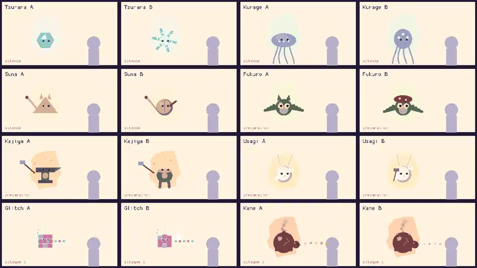
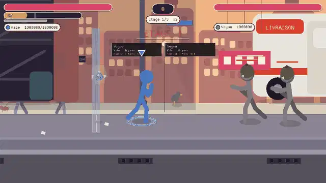
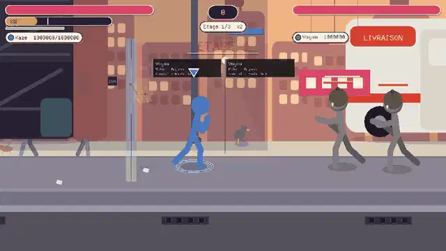
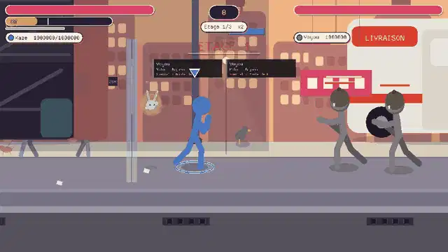
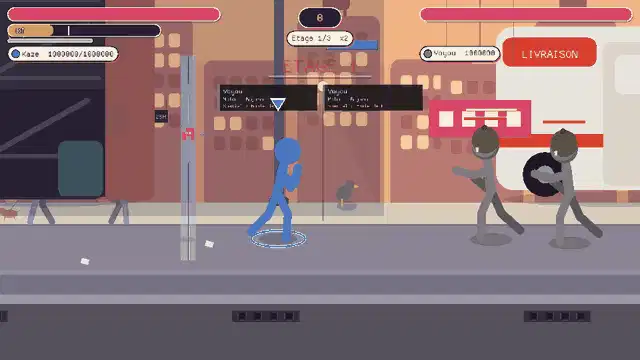
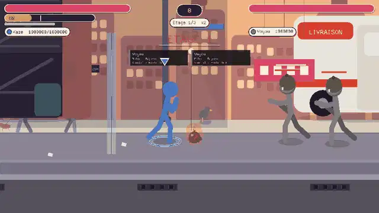
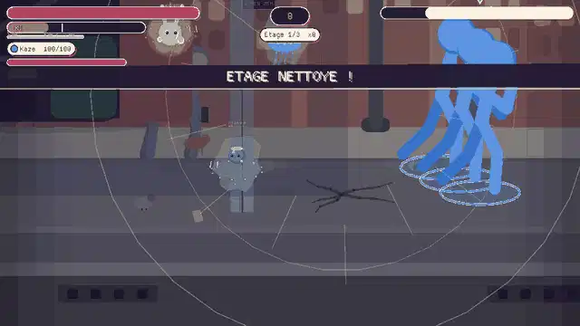
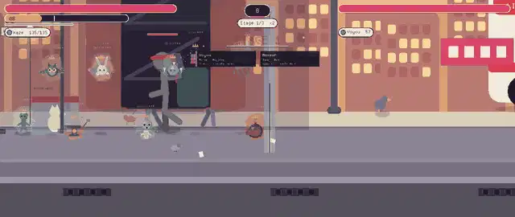
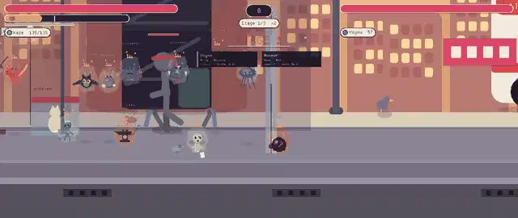

Huit daemons originaux (un par element ou lieu : glace, mer, desert, forêt, forge, lune, ville-neon, volcan), chacun avec repos anime, deux attaques explicites, une préparation lisible avant chaque attaque, et des reactions (victoire, KO, joie, peur, météo, boss). Ils s'obtiennent dans des capsules rares (un étage sur quatre). Tout est capture dans le vrai moteur.
Capture du vrai moteur : repos, PRÉPARATION (le daemon se met en position, differente pour l'attaque 1 et l'attaque 2), puis attaque. Dessin A = integre par defaut ; dessin B = alternative. Choisis ci-dessous.


Lance de glace / Givre qui fige. Préparation lisible avant chaque attaque, puis alternance.
Decharge électrique / Pluie de bulles toxiques. Préparation lisible avant chaque attaque, puis alternance.

Rafale de sable / Sables mouvants. Préparation lisible avant chaque attaque, puis alternance.
Tempête de feuilles / Racines qui retiennent. Préparation lisible avant chaque attaque, puis alternance.
Marteau / Gerbe d'étincelles. Préparation lisible avant chaque attaque, puis alternance.

Mochi etourdissant / Rayon de lune qui soigne. Préparation lisible avant chaque attaque, puis alternance.

Faisceau de pixels / Plantage. Préparation lisible avant chaque attaque, puis alternance.

Coulee de lave / Éruption. Préparation lisible avant chaque attaque, puis alternance.

Trois joueurs : les daemons se saluent, jouent ou dorment cote a cote ; ils evoluent visuellement avec leur lien (étincelle, halo, couronne).
Tous les daemons (anciens et nouveaux) reagissent.

Tous les daemons (anciens et nouveaux) reagissent.
Tous les daemons (anciens et nouveaux) reagissent.

Tous les daemons (anciens et nouveaux) reagissent.